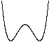
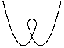
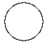
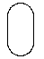
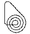
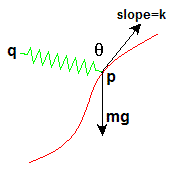

The math behind the simulation is shown below. Also available are: open source code, documentation and a simple-compiled version which is more customizable.
|
 hump |
 loop-the-loop |
 circle |
Lemniscate |
 oval |
 spiral |
Physics of the Roller Coaster with Spring
This simulation is a variation of the Simple Roller Coaster, please see that page for more information on the physics and how the simulation is done. The only difference here is that the spring force is added to the differential equation.

roller coaster forces
Define the following variables:
- (px, py) = position of ball in 2 dimensional space
- (qx, qy) = fixed end of spring
- k = slope of track at point P
- R = rest length of spring
- c = stiffness of spring (constant)
- θ = angle between the spring and tangent vector
- m = mass
- g = gravity constant
The width and height of the spring is given by:
sx = qx − px
sy = qy − py
The length of the spring is then √(sx2 + sy2) . The magnitude of the spring force is c (√(sx2 + sy2) − R) . The direction of the spring force is towards vec(Q), the fixed end of the spring. The component of the spring force that is parallel to the track is
| F = cos(θ) c (√(sx2 + sy2) − R) | (1) |
It is this parallel-to-the-track component of the spring force that will accelerate the ball along the track. Consider a couple of cases to convince yourself of this: If the spring is perpendicular to the track, then θ ≈ 90° and cos(θ) ≈ 0 so the spring doesn't accelerate the ball. Conversely, if θ ≈ 0 then the spring will accelerate the ball in the positive track direction. Or, if θ ≈ 180° then the spring accelerates the ball in the negative track direction.
We can find cos(θ) by using the formula for the angle between two vectors A, B
| cos θ = | A · B |
| |A| |B| |
where the numerator is the dot product, and the denominator is the product of the magnitudes. Define our two vectors by
- A = (1, k) the slope vector, pointing in the direction of increasing p
- B = (sx, sy) a vector in the direction of the spring force
This leads to
| cos θ = | sx + k sy |
| √(1 + k2) √(sx2 + sy2) |
Put this expression into equation (1) and combine with the gravity and friction forces developed for the Simple Roller Coaster to get
| (2) |
where b = damping constant and v = velocity. Keep in mind that the slope k and spring stretch sx, sy are functions of the position p .
Besides this change to the force equation, the simulation is similar to the Simple Roller Coaster. Please see that page for more information on how the simulation is implemented.
This web page was first published June 2002.